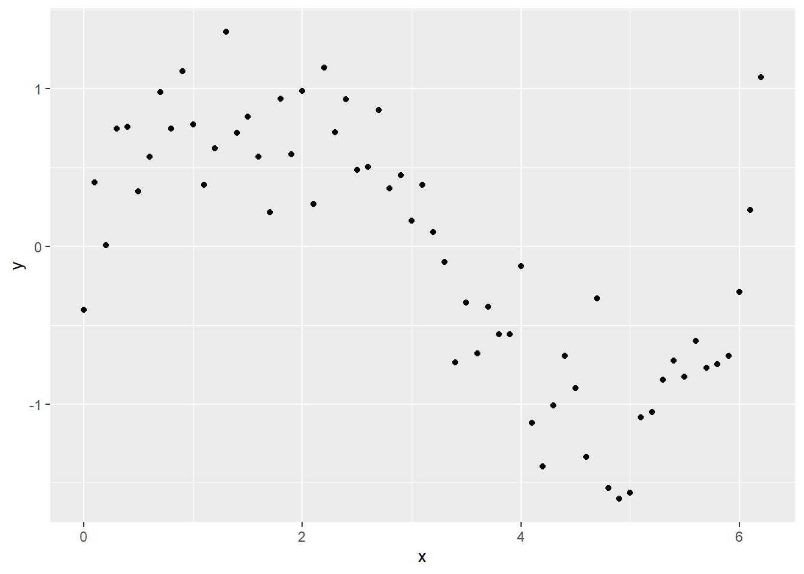
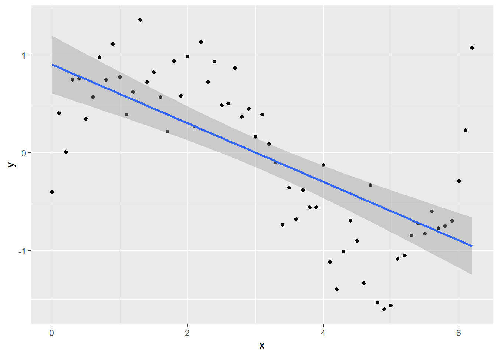
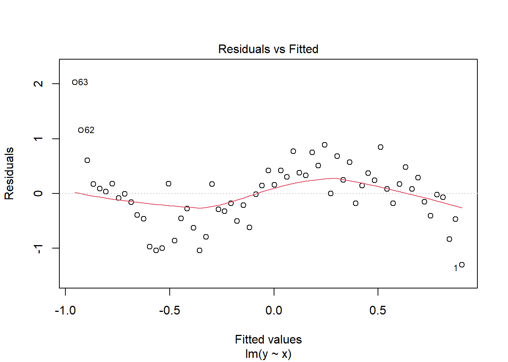
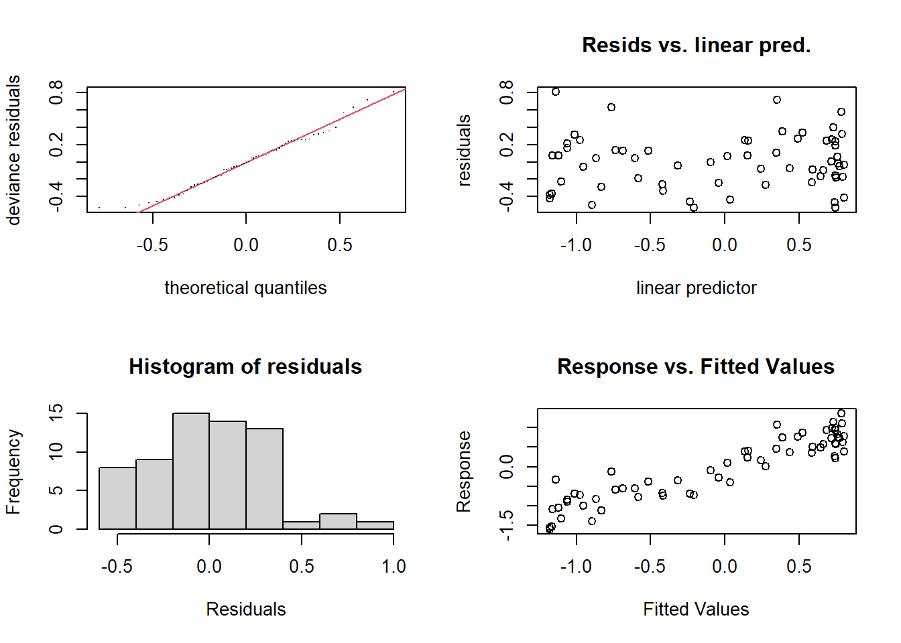
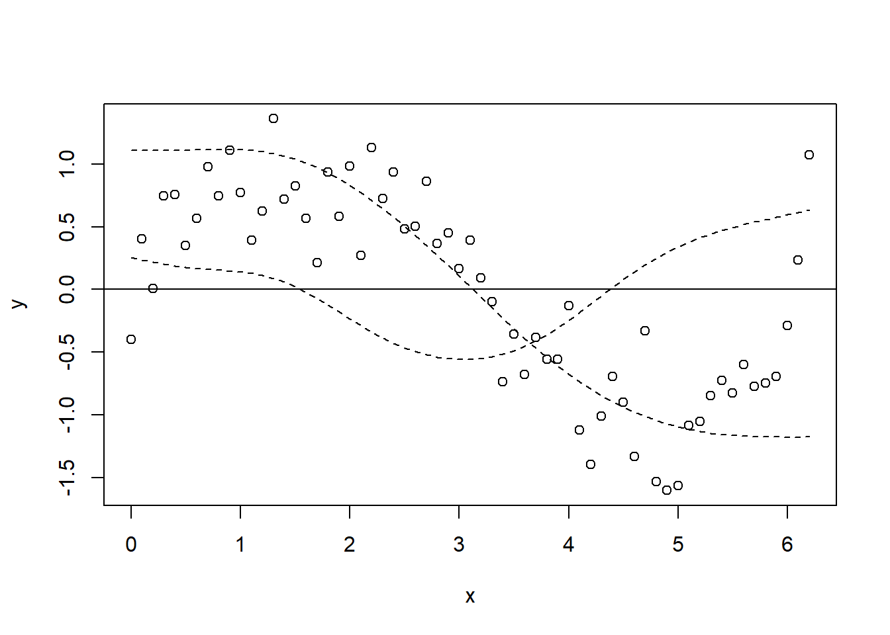
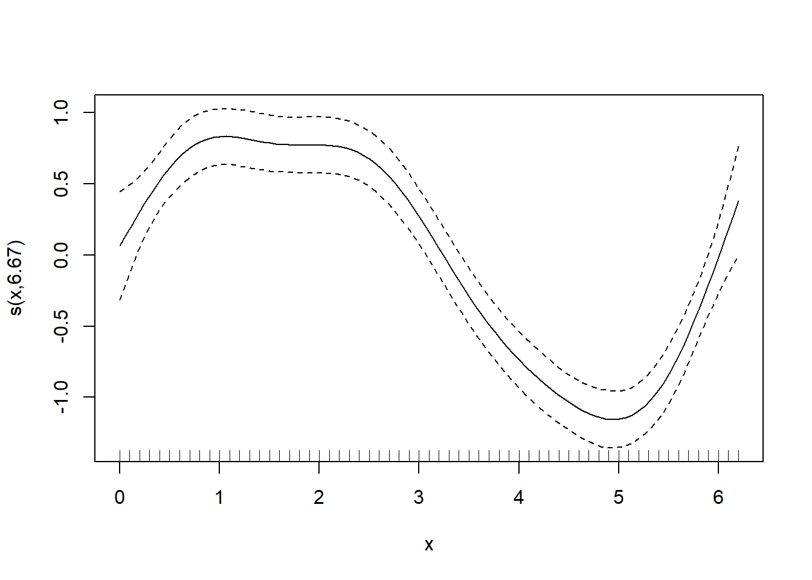
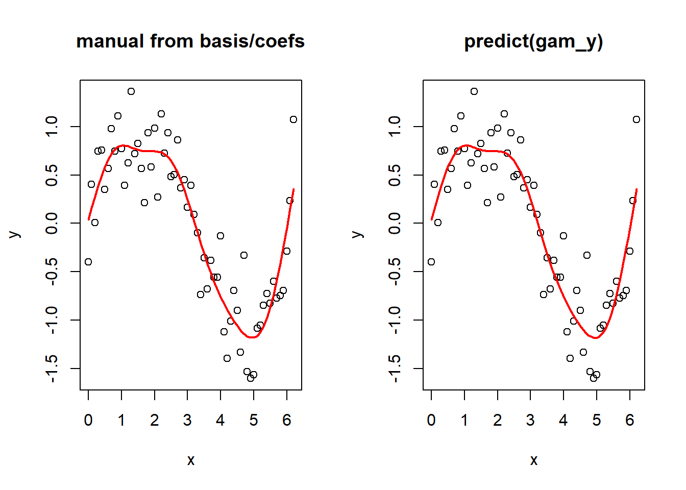
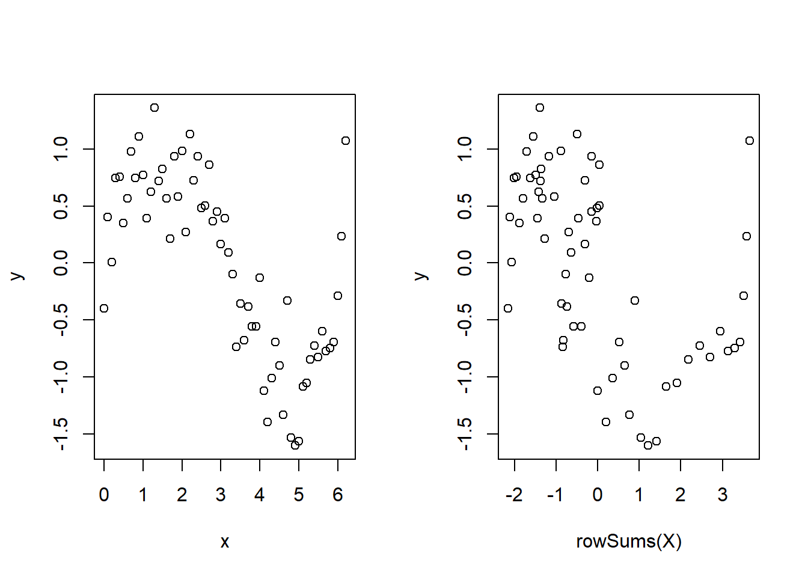
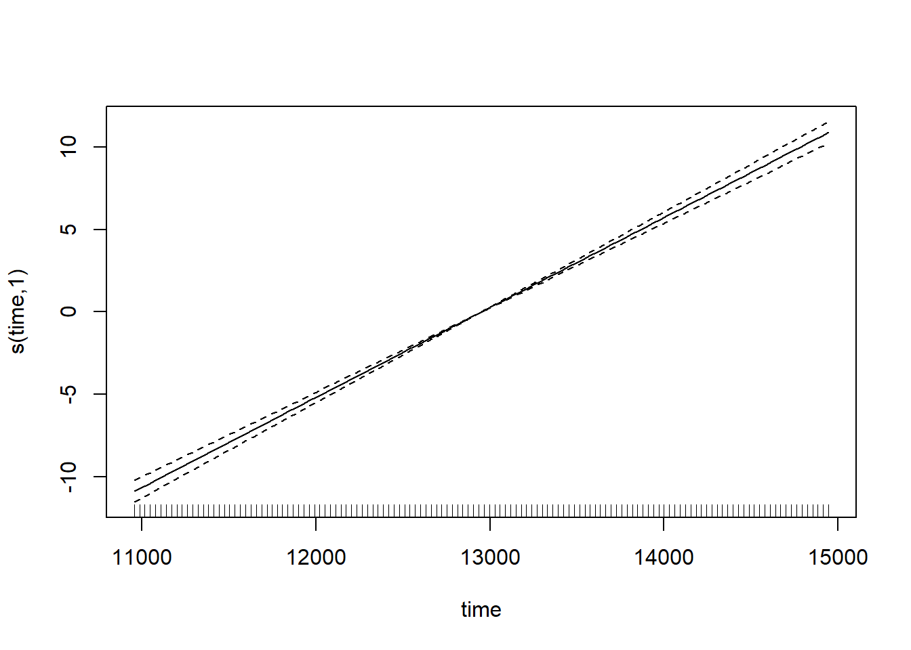

Modelos Aditivos Generalizados (GAM)
Muchos datos en las ciencias ambientales no se ajustan a modelos lineales simples y se describen mejor mediante “modelos oscilantes”, también conocidos como Modelos Aditivos Generalizados (GAM, por sus siglas en inglés).
Comencemos con un famoso tweet de Gavin Simpson, que se resume en: 1. Los GAM son solo GLM. 2. Los GAM ajustan términos oscilantes. 3. Usa + s(x) en lugar de x en tu sintaxis. 4. Usa method = "REML". 5. Siempre revisa gam.check().
Básicamente, esto es todo: una extensión de los modelos lineales generalizados (GLM) con una función de suavizado. Por supuesto, puede haber muchas cosas sofisticadas sucediendo cuando ajustas un modelo con términos suaves, pero solo necesitas comprender la justificación y un poco de teoría básica. También hay muchas cosas aparentemente mágicas sucediendo cuando intentamos entender lo que sucede detrás de escena en, por ejemplo, lmer o glmer, ¡pero los usamos todo el tiempo sin reservas!
Los GAM en pocas palabras
Comencemos con una ecuación para un modelo lineal gaussiano:
\[y = \beta_0 + x_1\beta_1 + \varepsilon, \quad \varepsilon \sim N(0, \sigma^2)\]
Lo que cambia en un GAM es la presencia de un término de suavizado:
\[y = \beta_0 + f(x_1) + \varepsilon, \quad \varepsilon \sim N(0, \sigma^2)\]
Esto simplemente significa que la contribución al predictor lineal es ahora alguna función \(f\). Esto no es muy diferente conceptualmente de usar un término cuadrático (\(x_1^2\)) o cúbico (\(x_1^3\)) como tu predictor.
La función \(f\) puede ser algo más extravagante o peculiar; aquí nos centraremos en los splines. En el pasado, podría haber sido algo como funciones lineales por partes.
Puedes tener combinaciones de términos lineales y suaves en tu modelo, por ejemplo:
\[y = \beta_0 + x_1\beta_1 + f(x_2) + \varepsilon, \quad \varepsilon \sim N(0, \sigma^2)\]
o podemos ajustar distribuciones generalizadas y efectos aleatorios, por ejemplo:
\[\ln(y) = \beta_0 + f(x_1) + \varepsilon, \quad \varepsilon \sim Poisson(\lambda)\]
\[\ln(y) = \beta_0 + f(x_1) + z_1\gamma + \varepsilon, \quad \varepsilon \sim Poisson(\lambda), \quad \gamma \sim N(0,\Sigma)\]
Un ejemplo sencillo
Vamos a intentar un ejemplo sencillo. Primero, creemos un marco de datos y llenémoslo con algunos datos simulados que tienen una clara tendencia no lineal y comparemos qué tan bien se ajustan algunos modelos a esos datos.
x <- seq(0, pi * 2, 0.1)
sin_x <- sin(x)
y <- sin_x + rnorm(n = length(x), mean = 0, sd = sd(sin_x / 2))
Sample_data <- data.frame(y, x)library(ggplot2)
ggplot(Sample_data, aes(x, y)) +
geom_point()
Intentemos ajustar un modelo lineal normal:
lm_y <- lm(y ~ x, data = Sample_data)y tracemos la línea ajustada junto con los datos utilizando geom_smooth en ggplot
ggplot(Sample_data, aes(x, y)) +
geom_point() +
geom_smooth(method = lm)`geom_smooth()` using formula = 'y ~ x'
Al observar el gráfico o summary(lm_y), es posible que pienses que el modelo se ajusta bien, ¡pero echa un vistazo al gráfico de residuos!
plot(lm_y, which = 1)
Claramente, los residuos no están distribuidos uniformemente en los valores de \(x\), y necesitamos considerar un mejor modelo.
Ejecutando el análisis
Antes de considerar un GAM, necesitamos cargar el paquete mgcv - la elección para ejecutar GAMs en R.
library(mgcv)Para ejecutar un GAM, utilizamos:
gam_y <- gam(y ~ s(x), method = "REML")Para extraer los valores ajustados, podemos utilizar predict como de costumbre:
x_new <- seq(0, max(x), length.out = 100)
y_pred <- predict(gam_y, data.frame(x = x_new))Pero para modelos simples, también podemos utilizar el argumento method = en geom_smooth, especificando la fórmula del modelo.
ggplot(Sample_data, aes(x, y)) +
geom_point() +
geom_smooth(method = "gam", formula = y ~ s(x))Puedes ver que el modelo se ajusta mejor a los datos, pero siempre verifica los diagnósticos.
check.gam es rápido y fácil para ver los gráficos de residuos.
par(mfrow = c(2, 2))
gam.check(gam_y)
Method: REML Optimizer: outer newton
full convergence after 6 iterations.
Gradient range [-1.321226e-09,1.08828e-09]
(score 37.07628 & scale 0.1394296).
Hessian positive definite, eigenvalue range [1.961807,30.69263].
Model rank = 10 / 10
Basis dimension (k) checking results. Low p-value (k-index<1) may
indicate that k is too low, especially if edf is close to k'.
k' edf k-index p-value
s(x) 9.00 5.69 1.05 0.66Utilizando summary con el objeto del modelo te dará la significancia del término suave (junto con cualquier término paramétrico, si los has incluido), junto con la varianza explicada. En este ejemplo, es un ajuste bastante decente. El ‘edf’ es el número estimado de grados de libertad, esencialmente, cuanto mayor sea el número, más ondulado será el modelo ajustado. Los valores alrededor de 1 tienden a ser cercanos a un término lineal. Puedes leer sobre penalización y contracción para obtener más información sobre lo que refleja el edf.
summary(gam_y)
Family: gaussian
Link function: identity
Formula:
y ~ s(x)
Parametric coefficients:
Estimate Std. Error t value Pr(>|t|)
(Intercept) 0.01510 0.04704 0.321 0.749
Approximate significance of smooth terms:
edf Ref.df F p-value
s(x) 5.689 6.842 31.39 <2e-16 ***
---
Signif. codes: 0 '***' 0.001 '**' 0.01 '*' 0.05 '.' 0.1 ' ' 1
R-sq.(adj) = 0.775 Deviance explained = 79.6%
-REML = 37.076 Scale est. = 0.13943 n = 63Términos suavizados
Como se mencionó anteriormente, nos centraremos en los splines, ya que son las funciones suavizadas que se implementan más comúnmente (y son bastante rápidas y estables). Entonces, ¿qué sucede cuando especificamos s(x)?
Bueno, aquí es donde decimos que queremos ajustar \(y\) como una función lineal de un conjunto de funciones de \(x\). El valor predeterminado en mgcv es un thin plate regression spline (spline de regresión de placa delgada): los dos más comunes que probablemente verás son estos y los cubic regression splines (splines de regresión cúbicos). Los splines de regresión cúbicos tienen los knots tradicionales que pensamos cuando hablamos de splines, están distribuidos uniformemente en el rango de la covariable en este caso. Nos quedaremos con los thin plate regression splines, ya que supongo que Simon los hizo el valor predeterminado por alguna razón.
Funciones base
Bueno, aquí es donde veremos de qué está compuesta realmente la parte ondulada. Comenzaremos con el modelo ajustado y luego lo veremos desde los principios básicos (no realmente). Recordando que el término suavizado es la suma de algunas funciones (no estoy seguro de cuán bien esta ecuación representa realmente el término suavizado, pero entiendes el punto),
\[f(x_1) = \sum_{j=1}^kb_j(x_1)\beta_j\]
Primero extraemos el conjunto de funciones base (es decir, la parte \(b_j(x_j)\) del término suavizado). Luego podemos trazar, por ejemplo, la primera y segunda función base.
model_matrix <- predict(gam_y, type = "lpmatrix")
plot(y ~ x)
abline(h = 0)
lines(x, model_matrix[, "s(x).1"], type = "l", lty = 2)
lines(x, model_matrix[, "s(x).2"], type = "l", lty = 2)
Ahora tracemos todas las funciones base y luego agreguemos las predicciones del GAM (y_pred) nuevamente encima.
plot(y ~ x)
abline(h = 0)
x_new <- seq(0, max(x), length.out = 100)
y_pred <- predict(gam_y, data.frame(x = x_new))
matplot(x, model_matrix[, -1], type = "l", lty = 2, add = T)
lines(y_pred ~ x_new, col = "red", lwd = 2)Al principio es difícil ver qué ha sucedido, pero es más fácil pensarlo de esta manera: cada una de esas líneas punteadas representa una función (\(b_j\)) para la cual gam estima un coeficiente (\(\beta_j\)), y cuando las sumas, obtienes la contribución para el correspondiente \(f(x)\) (es decir, la ecuación anterior). Es bastante simple para este ejemplo, porque modelamos \(y\) solo como una función del término suavizado, por lo que es bastante comprensible. Como dato adicional, también puedes usar plot.gam para trazar los términos suavizados.
plot(gam_y)
Bien, ahora veamos más de cerca cómo se construyen las funciones base. Verás que la construcción de las funciones es independiente de los datos de respuesta. Solo para demostrarlo, usaremos smoothCon.
x_sin_smooth <- smoothCon(s(x), data = data.frame(x), absorb.cons = TRUE)
X <- x_sin_smooth[[1]]$X
par(mfrow = c(1, 2))
matplot(x, X, type = "l", main = "smoothCon()")
matplot(x, model_matrix[, -1], type = "l", main = "predict(gam_y)")Y ahora, para demostrar que puedes pasar de las funciones base y los coeficientes estimados al término suavizado ajustado. Nuevamente, ten en cuenta que esto está simplificado aquí porque el modelo es solo un término suavizado. Si tuvieras más términos, tendríamos que sumar todos los términos en el predictor lineal.
betas <- gam_y$coefficients
linear_pred <- model_matrix %*% betas
par(mfrow = c(1, 2))
plot(y ~ x, main = "manual from basis/coefs")
lines(linear_pred ~ x, col = "red", lwd = 2)
plot(y ~ x, main = "predict(gam_y)")
lines(y_pred ~ x_new, col = "red", lwd = 2)
Por interés, echa un vistazo al siguiente gráfico, recordando que X es la matriz de funciones base.
par(mfrow = c(1, 2))
plot(y ~ x)
plot(y ~ rowSums(X))
Por supuesto, esto no es toda la historia. Consulta gam.models y smooth.terms para ver todas las opciones de tipos de suavizadores, cómo se construyen las funciones base (penalización, etc.), tipos de modelos que podemos especificar (efectos aleatorios, funcionales lineales, interacciones, penalización) y mucho más.
Un ejemplo real rápido
Ahora veremos un ejemplo real rápido. Solo rascaremos la superficie, y en un tutorial futuro lo analizaremos en más detalle. Vamos a analizar algunos datos de CO\(_2\) de Mauna Loa. Ajustaremos un par de GAM al conjunto de datos para tratar de separar las tendencias intra e interanuales.
Primero, carga los datos, puedes descargarlos aquí.
CO2 <- read.csv("mauna_loa_co2.csv")Queremos analizar la tendencia interanual primero, así que convirtamos la fecha en una variable de tiempo continua (tomaremos un subconjunto para la visualización).
CO2$time <- as.integer(as.Date(CO2$Date, format = "%d/%m/%Y"))
CO2_dat <- CO2
CO2 <- CO2[CO2$year %in% (2000:2010), ]Ahora, vamos a graficar y observar un término suave para el tiempo.
\[y = \beta_0 + f_{\mathrm{tendencia}}(tiempo) + \varepsilon, \quad \varepsilon \sim N(0, \sigma^2)\]
ggplot(CO2_dat, aes(time, co2)) +
geom_line()Podemos ajustar un GAM para estos datos usando:
CO2_time <- gam(co2 ~ s(time), data = CO2, method = "REML")lo cual ajusta un modelo con un único término suave para el tiempo. Podemos observar los valores predichos para esto:
plot(CO2_time)
Observa cómo el término suave se reduce realmente a un término lineal ‘normal’ aquí (con un edf de 1): eso es lo bueno de los splines de regresión penalizados. Pero si revisamos el modelo, veremos que algo no está bien.
par(mfrow = c(2, 2))
gam.check(CO2_time)
Los gráficos de residuos muestran un patrón extraño de subida y bajada, claramente hay alguna estructura de dependencia (y probablemente podemos suponer que tiene algo que ver con fluctuaciones intra-anuales). Intentemos nuevamente e introduzcamos algo llamado un suavizador cíclico.
\[y = \beta_0 + f_{\mathrm{intrannual}}(mes) + f_{\mathrm{trend}}(tiempo) + \varepsilon, \quad \varepsilon \sim N(0, \sigma^2)\] El término suavizador cíclico, \(f_{\mathrm{intrannual}}(mes)\), está compuesto por funciones de base al igual que hemos visto anteriormente, excepto que los puntos finales del spline están restringidos a ser iguales, lo cual tiene sentido cuando estamos modelando una variable que es cíclica (a través de meses/años).
Ahora veremos el argumento bs = para elegir el tipo de suavizador y el argumento k = para elegir el número de puntos de anclaje, porque los splines de regresión cúbicos tienen un número fijo de puntos de anclaje. Usaremos 12 puntos de anclaje, porque hay 12 meses.
CO2_season_time <- gam(co2 ~ s(month, bs = "cc", k = 12) + s(time), data = CO2, method = "REML")Veamos los términos suavizados ajustados:
par(mfrow = c(1, 2))
plot(CO2_season_time)Al observar ambos términos suavizados, podemos ver que el suavizador mensual está captando esa subida y bajada mensual del CO\(_2\) - al observar las magnitudes relativas (es decir, fluctuación mensual vs. tendencia a largo plazo), podemos ver lo importante que es desentrañar las componentes de la serie temporal. Veamos cómo lucen los diagnósticos del modelo ahora:
par(mfrow = c(2, 2))
gam.check(CO2_season_time)
Mucho mejor. Veamos cómo se compara la componente estacional con la tendencia a largo plazo completa.
CO2_season_time <- gam(co2 ~ s(month, bs = "cc", k = 12) + s(time), data = CO2_dat, method = "REML")
par(mfrow = c(1, 2))
plot(CO2_season_time)
Hay más en la historia, ¿quizás autocorrelaciones espaciales de algún tipo? gam puede hacer uso de las estructuras de autocorrelación espacial disponibles en el paquete nlme, más sobre eso la próxima vez. Espero que por ahora los GAM no parezcan tan aterradores o mágicos, y que puedas comenzar a aprovechar lo que realmente es un marco de modelado increíblemente flexible y poderoso.
Comunicando los resultados
Puedes presentar los resultados de un GAM (Modelo Aditivo Generalizado) de manera similar a cualquier otro modelo lineal, con la diferencia principal de que, para los términos suaves, no hay un solo coeficiente del cual puedas inferir (por ejemplo, tamaño del efecto negativo o positivo). Por lo tanto, debes confiar en interpretar los efectos parciales de los términos suaves visualmente (por ejemplo, a través de una llamada a plot(gam_model)) o inferir a partir de los valores predichos. Por supuesto, puedes incluir términos lineales normales en el modelo (ya sean continuos o categóricos, e incluso en un marco de tipo ANOVA) e inferir a partir de ellos como lo harías normalmente. De hecho, los GAM a menudo son útiles para tener en cuenta un fenómeno no lineal que no es de interés directo, pero que debe tenerse en cuenta al hacer inferencias sobre otras variables.
Puedes trazar los efectos parciales llamando a la función plot en un modelo GAM ajustado, y también puedes analizar los términos paramétricos utilizando posiblemente la función termplot. Puedes usar ggplot para modelos simples como hicimos anteriormente en este tutorial, pero para modelos más complejos, es bueno saber cómo generar los datos utilizando predict. Aquí simplemente utilizamos la serie de tiempo existente, pero tú generarías tus propios datos para el argumento newdata=.
CO2_pred <- data.frame(
time = CO2_dat$time,
co2 = CO2_dat$co2,
predicted_values = predict(CO2_season_time, newdata = CO2_dat)
)
ggplot(CO2_pred, aes(x = time)) +
geom_point(aes(y = co2), size = 1, alpha = 0.5) +
geom_line(aes(y = predicted_values), colour = "red")
Más ayuda
La ayuda de R ?gam es muy buena y hay mucha información para leer. Echa un vistazo a ?gamm, ?gamm4 y ?bam. Utiliza citation("mgcv") para obtener una variedad de artículos con explicaciones técnicas más detalladas. El libro sobre GAMs con R es particularmente bueno (hay una versión de 2017). Un blog genial con mucho contenido sobre GAMs: https://www.fromthebottomoftheheap.net/
Autor: Mitchell Lyons
Año: 2017
Última actualización: Nov. 2023